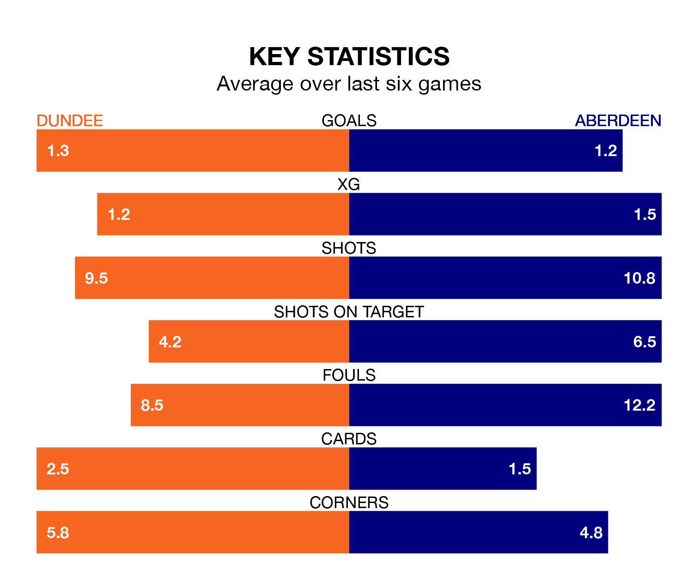

Aberdeen make the journey to Kilmac Stadium at Dens Park to play Dundee on late Wednesday looking to pick up points to end their three-game losing streak.
Aberdeen's struggles have left them with just two points from their last six Premiership matches, while their opponents have earned seven from a possible 18.
With 32 goals in 28 games so far this season, Aberdeen are scoring at below the league average rate with 1.1 goals per game. And they are conceding more than average, letting in 47 goals at a rate of 1.7 per game.
Dundee, meanwhile, are above average scorers, with 1.4 goals per game, compared to a league average of 1.3. They have conceded 1.8 goals per game.
In the last 10 years, Dundee and Aberdeen have played each other on 22 occasions. Dundee won one of them, Aberdeen 16, and they drew five times.
On average, the Dees scored 0.8 goals and Aberdeen 2.1 in those matches.
Their last meeting was on January 30, when they played out a 1-1 draw.
In Bojan Miovski, the away team have one of the league's most on-form strikers so far this season. He has notched 13 goals in 28 appearances, to sit third in the scoring charts.
His goal rate of one every 187 minutes is quicker than that of Luke McCowan, the Dees's top scorer with a goal every 338 minutes, and a total of seven goals in 27 games.
Aberdeen are 10th in the table after 28 games, of which they have won six and drawn nine, earning 27 points.
The hosts are three places ahead of Aberdeen in seventh, with eight wins and nine draws putting them on 33 points.
Dundee's last match was on March 2, a 2-2 draw against Kilmarnock, with McCowan and Will Dennis (own goal) getting the goals for the Dees.
Aberdeen lost 2-1 against St. Mirren last time out, also on March 2, with Connor Barron on the scoresheet.
Wednesday's match will be refereed by David Munro, who has taken charge of 11 Premiership games so far this season, issuing three red cards and booking 39 players. He has awarded three penalties.
The last Dundee game Munro refereed was a 2-1 home win against St. Johnstone on February 11. His last Aberdeen match was their 2-2 draw at home against Hibernian on February 17.
Updated: 09:34 (UTC), 08/03/24